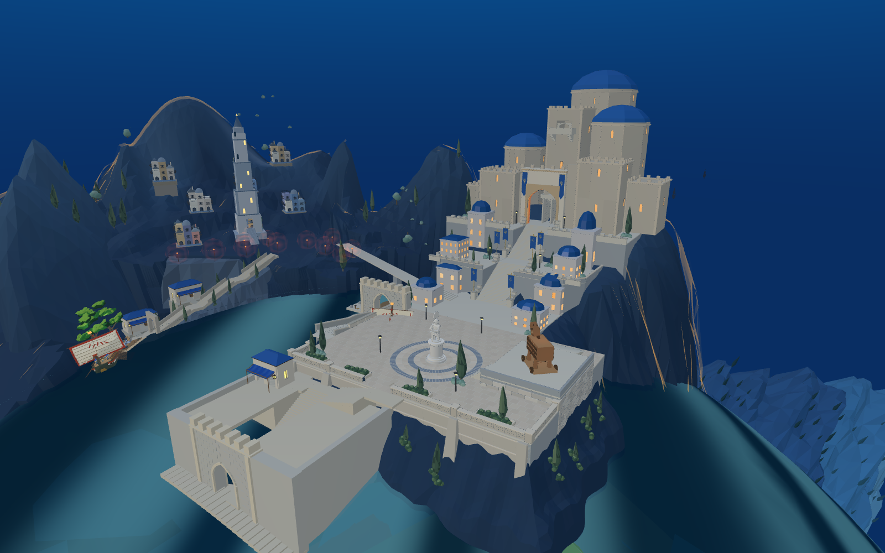
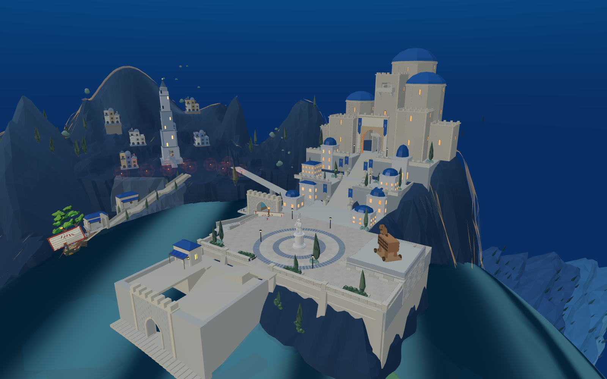
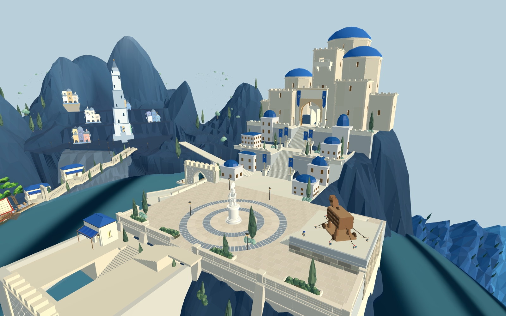

广场宽42.15→46.15米，雕像保持原位；木马与高台一并右移4米。六圈铺装半径7.4→10.7米，原雕像圆台保留。扩大后的护栏与承托墙在Blender重新处理并回接。
8931原游戏加载当前候选。默认入口尚未切换，整体前港仍需重建。



Web：395处出口中心线采样与六名士兵脚下支撑通过。 Godot：原短剑兵携装备完成14段木马台下行路线，位移28米。 两者均不代表完整木马动画、登船或战斗通过。

原木马位置已核对为新城局部坐标(85,5.8,72.5)，雕像保持(65,4,76)。新铺装4996三角形，旧铺装和平台在候选中隐藏。
承托墙仍过于垂直，广场边缘部分植物侵入环形区域，需在后续对应阶段校正。新城主堡与山体结合、前港方块和整体光照尚未达到目标。本页为候选证据，不是完成交付声明。